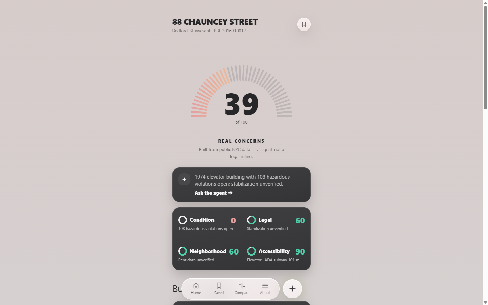
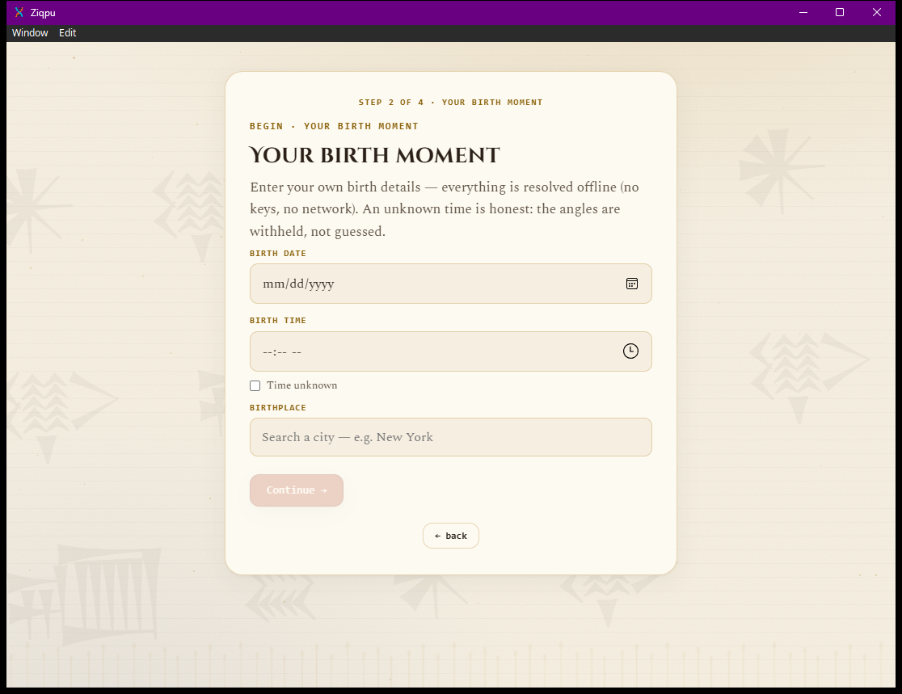
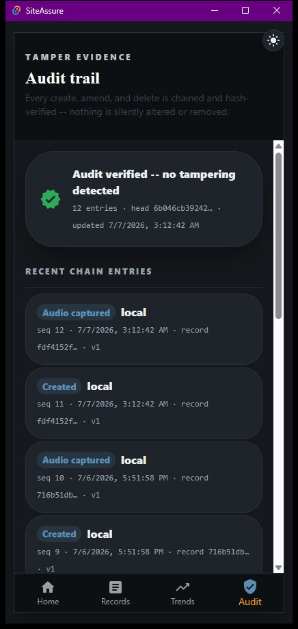
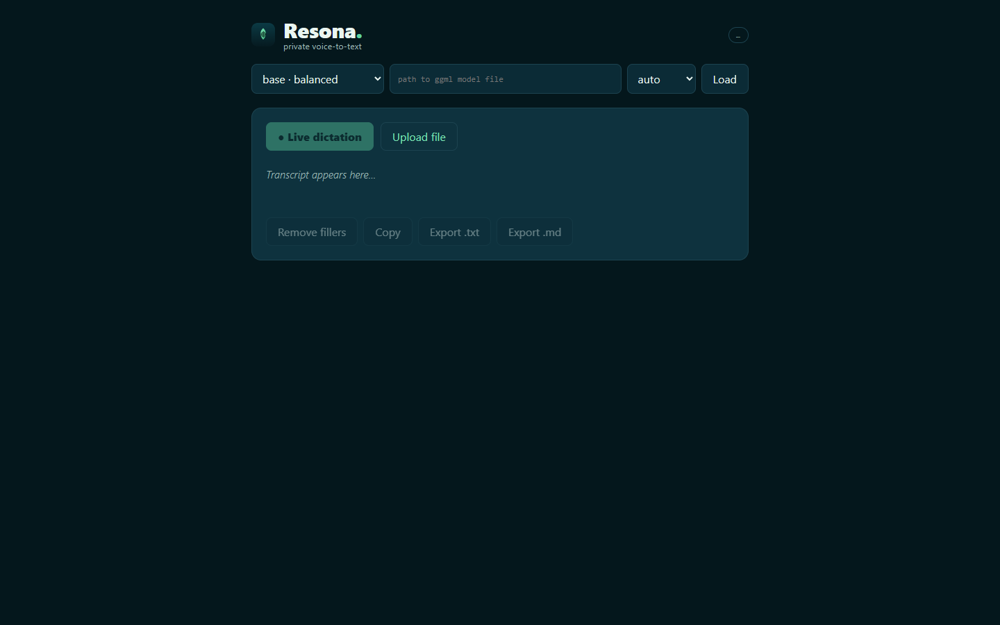

Pursuit AI-Native Builder · Inaugural cohort
Every one runs. Two are live on the internet right now; two are desktop applications you compile and launch. Most of the work is Rust — not because it is fashionable, but because three of the four have a correctness property that a garbage collector and a loose type system make harder to defend.
Carfax for NYC apartments. Type an address, get a Building Health Card scored from public city data — and export a record a stranger can cryptographically verify.

A consumer astrology decision tool with two visible agents — one measures, one interprets. The separation is the integrity guarantee, enforced by architecture rather than disclaimer.

A tamper-evident, offline-first OSHA compliance logger driven by voice. Every create, amend and delete is chained and hash-verified — nothing is silently altered or removed.

Privacy-first voice-to-text. 100% on-device via whisper.cpp — a property you can verify by unplugging the network and watching it keep working.

A tenant lawyer can read a building's violations on any city website. What they cannot do is put that reading in front of a court, because a printout is unverifiable. HouseCheck's export carries an append-only hash chain and an Ed25519 signature, so opposing counsel can re-check it offline — without trusting us and without reaching our servers.
The part I am prouder of than the cryptography: while verifying it in production I wrote an
independent verifier in another language, and found that signing alone was not
enough. A forger who rewrites a row, recomputes the whole chain and signs it with their own
keypair produces a document that verifies as intact — because it is internally consistent. A row
rewritten to NO VIOLATIONS OF ANY KIND AT THIS ADDRESS passed cleanly.
The fix was publishing the public key at a stable endpoint, so a reader has something to compare against. That hole existed because the code's own comment said “compare with the published one” while nothing published it.
Figures in these repos are measured and say so. Anything derived is labelled derived; anything unverified says unverified. HouseCheck's backlog carries the rule in writing: an item with no reason is a wish, not a task.
Nearly every real defect I found in the final week was invisible from inside the editor — a search box that answered a Manhattan address with a Brooklyn building, a failed lookup that silently kept the previous result on screen, an assistant that answered a different question than the one asked.
Repeatedly the honest design has three states rather than two: signed / unsigned-but-intact / tampered. A repair-time median / “nothing has been closed” / genuinely no data. Collapsing the middle state is how software ends up stating something reassuring it has not earned.